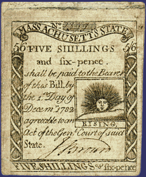

View more samples of money |

Martha Ballard and her neighbors
lived in a time of scarce money. They carried on their traded by using
many currencies. When no money was available, they resorted to credit
and barter.
Before the American Revolution,
New Englanders kept their records in pounds, shillings, and pence (American,
not British Sterling). After the Revolution, the U.S. government declared
U.S. dollars and cents the official currency of record. The habit of keeping
records in shillings and pence persisted, however. These were written
using a virgule (/). Six pence were written as /6. Six shillings were
written as 6/. Shillings and pence together had the virgule written between
them, as in five shillings six pence (5/6), and so on. Look in the diary
entries for this kind of notation.
Martha Ballard also used XX
in her record-keeping system. The XX in her left margin meant that a birth
fee had been paid.
When Martha was writing in
her diary, foreign currencies were still legal tender. The diary gives
us an idea of what kinds and amounts of currency went through the hands
of common people.
|